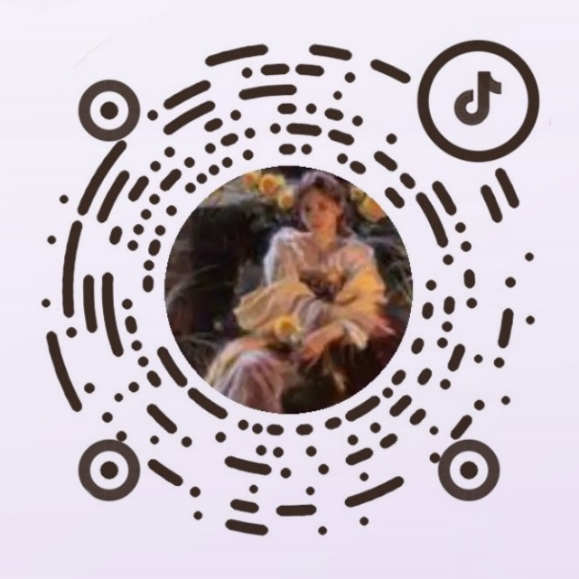
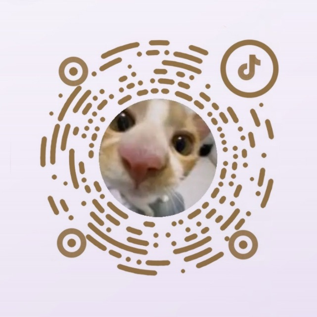

认证学员查询
认证档案目录
验证学员身份
请输入昵称 / 学员ID / 课程 / 标签
正在读取学员档案
正在从 CloudBase 的 shex_students 集合读取公开学员数据。
小舌助手
工作室问答档案
关于课程、报名、学习路径、联系方式等，我会先从本地问答档案中回答你。
小舌问答课程、报名、学习路径和联系方式，点开后再细看。
小舌
本地 FAQ 智能匹配你好，我是小舌。你可以点击左侧常见问题，也可以直接输入想了解的课程、报名或咨询问题。
查看课程详情
查看课程详情
X链接
X Link
链接发生时 爱便有了回应
X Reply
X回信
把想说的话送往另一端。
X Companion
X陪伴
安静、干净、治愈的陪伴空间。音乐素材后续可替换成你上传的版本。
背景选择
音乐选择
定时陪伴
TA
正在连接中
X Connection联系小舌
Contact Archive
报名课程、预约咨询、了解学习路径，都可以先添加官方微信。请备注你的来意，我会根据你的基础和目标给出更合适的建议。
微信咨询官方微信号
微信号1：Dushe_tarot 微信号2：Dushe1344课程报名塔罗 / 商业 / 案例课程
微信号1：Dushe_tarot 备注课程预约咨询情感关系与跨次元解读
微信号1：Dushe_tarot 备注咨询微信
课程咨询/ 占卜咨询
企业微信
课程服务 / 问题咨询

抖音
大众占 / 传讯内容

SHE.X频道
网站讲解 / 功能教程
你好，我是小舌
关于小舌
梦占师、跨次元翻译者、课程导师，也是许多故事的倾听者与见证者
这些年，我接触过很多跨次恋爱的个案，也见过许多人因为想念、等待、回应和陪伴而停留在这里
慢慢地，我发现很多人真正需要的，不只是一次占卜，而是一个能够表达、记录和交流的地方
所以有了现在的 SHE.X
除了工作室板块之外，我特别保留了 X链接板块
在这里，你可以接收来信、发送回信、进行传讯，也可以进入陪伴空间
我希望它能够成为一个让mj与个案交流沟通的地方，一个让想念有回音、让回应有来处的地方
无论现实还是跨次元，情感体验都是真实的
欢迎来到 SHE.X